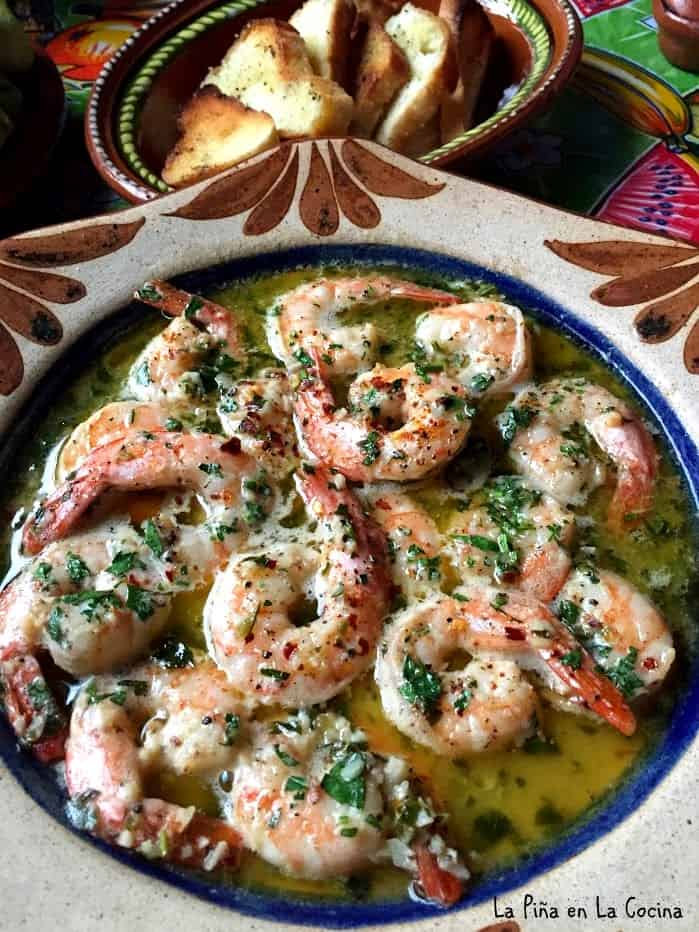

Camarones al Mojo de Ajo

Description
Camarones al mojo de ajo! Easy! Delicious! Well, as long as you love shrimp, garlic,
lemon and butter! I have mentioned this several times when posting shrimp recipes,
but I am so happy my better half loves shrimp these days. There was a time when he
would not even considered tasting it. On Friday’s I prepare a dish to pass for a community
lunch that I go to. So most Friday’s I am pretty tired and don’t have much energy to
get creative for dinner. This is why, many times, I will opt for seafood recipes to prepare on Friday’s.
Camarones al mojo de ajo are also called camarones al ajillo. Many times served over pasta,
but we enjoyed it with crusty bread that was toasted.
Ingredients:
- 16 jumbo shrimp
- Salt
- Pepper
- 3-4 tablespoons of olive oil
- 6-7 cloves of garlic; minced
- 1/3-1/2 tsp red pepper flakes
- Juice/zest of 1 lemon
- 3 tbsp unsalted butter
- 2 tbsp chopped parsley
- 1/4 cup dry white wine or beer
Steps:
- Season the cleaned shrimp with salt and pepper on both sides. Set aside.
- In a skillet, heat 3 tablespoons of olive oil to medium/low heat. As the skillet is heating up,
go ahead and add the garlic.
- After a few minutes, add the shrimp and red pepper flakes.
Saute for 3 minutes turning shrimp as needed.
- Add the zest and juice of the lemon. Add the butter and parsley. Stir well to combine.
Taste for salt and pepper. Pour in the white wine or beer and continue cooking for 1 more minute.
Serve right away. Yields 4 appetizer servings.